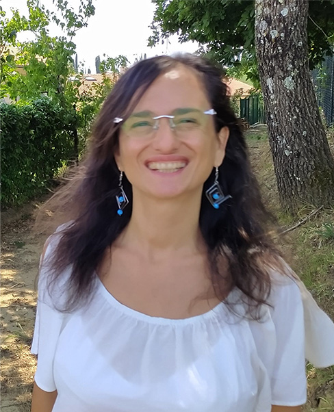

Mi chiamo Alessandra Cota, il mio nome spirituale è
Mahan Deva Kaur.
Sono insegnante di educazione fisica, insegnante di yoga e di kundalini yoga.
Sono nata a Maglie (Le) nel 1968. Sin da bambina ho praticato varie attività sportive ed arti marziali. Da sempre interessata allo yoga, ho iniziato a praticarlo dopo il completamento degli studi di educazione fisica.
La mia natura irrequieta, ed un mal di schiena ricorrente, mi hanno portato a scegliere questa disciplina, ed a seguire vari
maestri spirituali e vari stili di yoga: Ratna Yoga, Raja, Hatha yoga e tecniche di meditazione: Samata,
Vipassana e Theravada. Avevo già camminato a lungo quando, nel 2008, mi sono imbattuta per la prima volta nel kundalini yoga, al quale ho poi deciso di dedicarmi completamente.
Attualmente sono un'insegnante certificata IKITA e continuo il mio percorso sotto la guida del maestro Shiv Charan Singh.
Nella mia vita ho attraversato momenti bui, ho
affrontato diverse difficoltà che mi hanno permesso di
constatare che gli ostacoli si rivelano le nostre migliori occasioni, mettendoci davanti a due possibili scelte: affondare o sopravvivere!
Lo sbocco offerto dallo yoga mi ha permesso di
scoprire che la nostra coscienza ha un potere e che oltre il caos, l’irrequietezza, il vuoto, si apre un vasto mondo di perfezione, armonia e
bellezza!!!